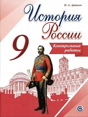

Пособие является составной частью учебно-методического комплекса «История России. 9 класс» (авторы учебника Н.М. Арсентьев, А.А. Данилов, А.А. Левандовский, А.Я. Токарева) и предназначено для проверки результатов обучения по курсу истории 9 класса в соответствии с требованиями Федерального государственного образовательного стандарта основного общего образования и Историко-культурного стандарта. В пособие включены контрольные работы в форме тестовых заданий, аналогичных заданиям ОГЭ, и работы в форме вопросов.
Глава I. Россия в первой четверти XIX в.
Глава II. Россия во второй четверти XIX в.
Глава III. Россия в эпоху Великих реформ
Глава IV. Россия в 1880-1890-е гг.